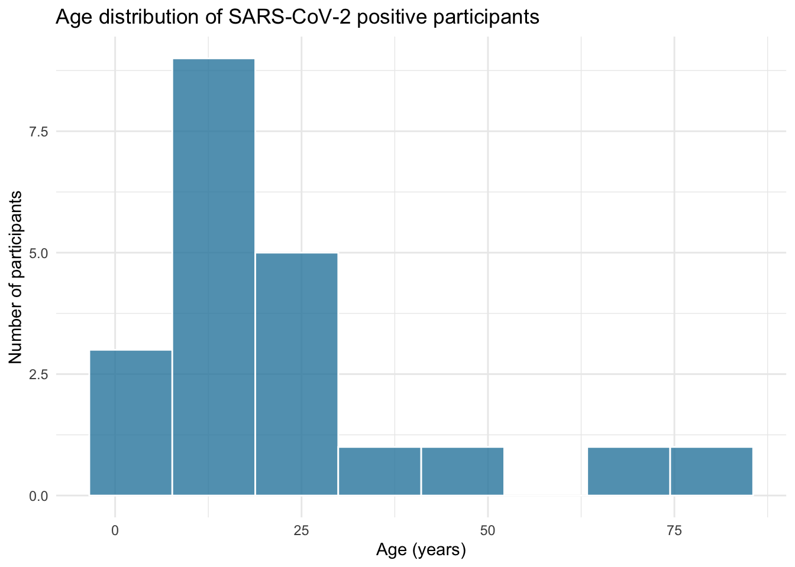
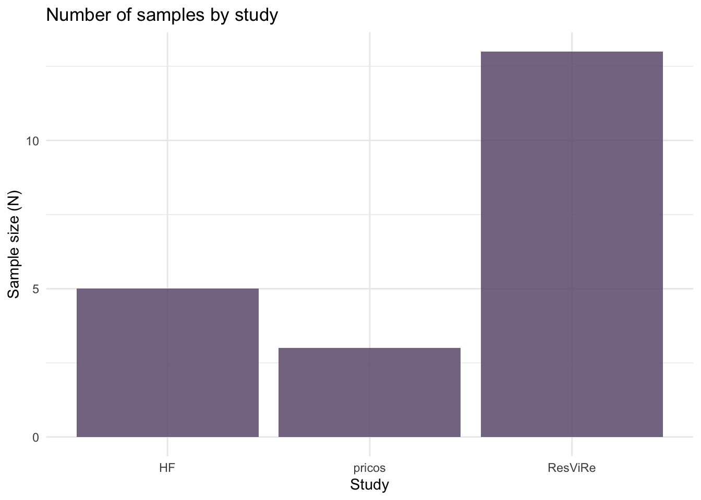
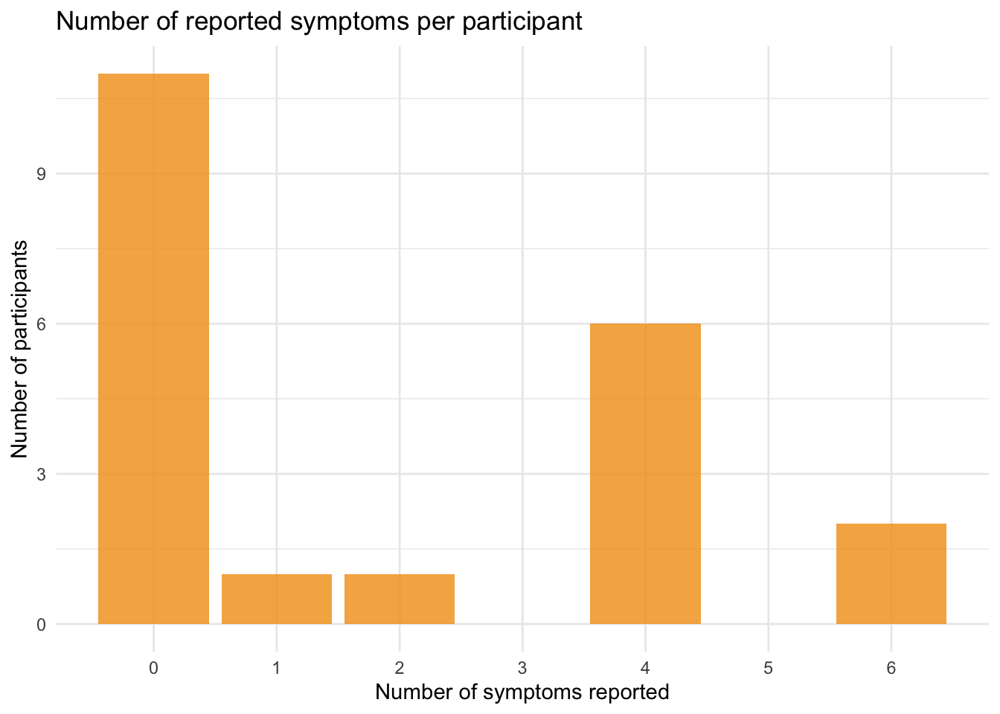
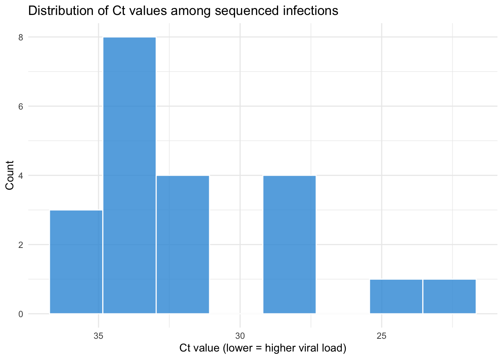

Dataset title: Replication Data for: Low Transmission of the Globally Dominant Recombinant SARS-CoV-2 XFG variant in Kenya, May–July 2025
DOI: https://doi.org/10.7910/DVN/LJEYL6
Year: 2025 The replication data package comprises a primary analytic dataset (Data1_xfg.csv), a codebook detailing the variables, and a R Markdown script utilized to duplicate the original Table 1. For this project, I downloaded the complete package and stored Data1_xfg.csv in the local data/ directory of the RStudio project (this file is not published to GitHub to maintain data-sharing boundaries). The dataset comprises 21 RT-PCR-confirmed SARS-CoV-2 cases gathered between May and July 2025 from three surveillance platforms in coastal Kenya. Each row represents a single participant or sample.
Code
# Load raw data and perform initial cleaning# This chunk reads the raw CSV file, cleans variable names,and creates derived variables needed for later analysis.library(tidyverse) # data wrangling and visualizationlibrary(lubridate) # date handlinglibrary(janitor) # clean variable namesData_xfg_raw <- readr::read_csv("/Users/ldh/Library/Mobile Documents/com~apple~CloudDocs/USC PhD/STUDY DOCUMENTS/Fall 2025/PM 566/Final Project/PM 566 Final Project/PM-566-Final-Project/data/Data1_xfg.csv")Data_xfg <- Data_xfg_raw %>% janitor::clean_names() %>%mutate(date_collect = lubridate::dmy(date_collect),lineage_group =if_else( stringr::str_starts(nextclade_pango2, "XFG"),"XFG lineage", "Other lineages" ),lineage_group =factor(lineage_group),clinical_status =factor(clinical_status,levels =c("asymptomatic", "symptomatic")),study =factor(study,levels =c("HF", "pricos", "ResViRe")) )
Following the cleaning process, no observations were discarded; all 21 samples were preserved. The variable date_collect was transformed into a Date class with lubridate::dmy(). The lineage variable nextclade_pango2 was reclassified into a more straightforward two-level factor lineage_group (“XFG lineage” vs “Other lineages”). The variables study, clinical_status, and age_group were specifically designated as factors to guarantee uniform ordering in tables and figures. No imputation was conducted.
Exploratory plots
This section’s charts aim to illustrate the age distribution of participants and the general prevalence of reported symptoms. Due to the limited sample size, these graphs should be interpreted as descriptive representations rather than accurate estimations. ## Age distribution
Code
# This chunk visualizes the distribution of participant ages (in years).# A simple histogram is used due to the small sample size.ggplot(Data_xfg, aes(x = age_years)) +# map age_years to x-axisgeom_histogram(bins =8, # choose a small number of binsfill ="#2E86AB", # bar coloralpha =0.8, # slight transparencycolor ="white"# white borders for readability) +labs(title ="Age distribution of SARS-CoV-2 positive participants",x ="Age (years)",y ="Count") +theme_minimal()

Code
# Expected result: a histogram showing how the 21 participants are distributed across age, highlighting the mix of children, adolescents, and adults.
Sample size by study
Code
# This chunk summarized how many observations were contributed by each study.# It gave context for later stratified analyses.study_counts <- Data_xfg %>%# start from the cleaned dataset dplyr::count(study) # count number of rows per studyggplot( study_counts,aes(x = study, # x-axis: HF, pricos, ResViRey = n # y-axis: number of samples )) +geom_col(fill ="#6C5B7B", # bar fill coloralpha =0.85 ) +labs(title ="Number of samples by study",x ="Study",y ="Sample size (N)" ) +theme_minimal()

Code
# Expected result:A bar chart showing how many participants were included from each study,indicating the relative contribution of HF, pricos, and ResViRe.
Number of reported symptoms per participant
Code
# This chunk counts, for each participant, how many different symptoms were reported, and then displays the distribution of this count.# 1. List the symptom variables to be considered.symptom_vars <-c("sys_cough", "sys_headache", "sys_runny_nose","sys_sore_throat", "sys_chestpain", "sys_fever")# 2. For each participant, count the number of symptoms with value "Yes".symptom_counts <- Data_xfg %>%mutate(n_symptoms =rowSums(across(all_of(symptom_vars), # apply across the listed symptom variables~ .x =="Yes"# logical test: TRUE if symptom == "Yes"),na.rm =TRUE# treat NA as 0 when summing))# 3. Plot the distribution of the count of reported symptoms.ggplot(symptom_counts, aes(x = n_symptoms)) +geom_bar(fill ="#F39C12", # bar coloralpha =0.8) +labs(title ="Number of reported symptoms per participant",x ="Number of symptoms",y ="Count") +theme_minimal()

Code
# Expected result: a bar chart showing how many participants reported 0, 1, 2, etc symptoms. This helps describe overall symptom burden in the small cohort.
Overall Ct value distribution
Code
# This chunk visualizes the overall distribution of Ct values across all sequenced samples in the dataset.ct_nonmiss <- Data_xfg %>%# start from the cleaned dataset dplyr::filter(!is.na(ct_value)) # keep only records with non-missing Ct valuesggplot( ct_nonmiss,aes(x = ct_value) # x-axis: Ct value) +geom_histogram(bins =8, # number of histogram binsfill ="#3498DB", # bar fill coloralpha =0.8,color ="white"# bar border color ) +scale_x_reverse() +# reverse x-axis so lower Ct appears on the rightlabs(title ="Distribution of Ct values among sequenced infections",x ="Ct value (lower = higher viral load)",y ="Count" ) +theme_minimal()

Code
# Expected result: A histogram summarizing Ct values across all 21 samples, offering a quick overview of viral load levels before stratified analyses.